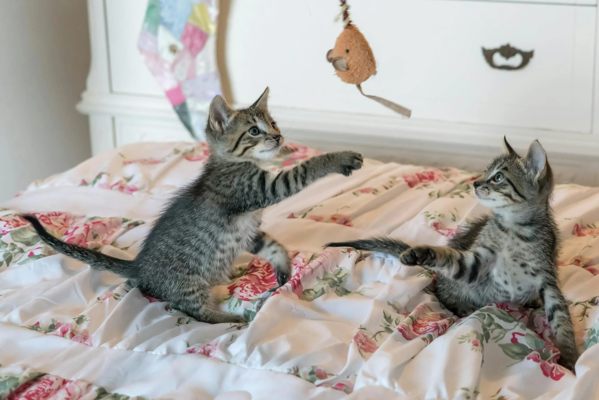

<section id="faq" class="my-5">
    <div class="container">
        
        <h2 class="text-uppercase text-center mb-3">Кои сме ние?</h2>
        <div class="row">
            <div class="col-lg-6 my-4 d-flex flex-column justify-content-center">
                <h2 class="text-uppercase text-center">История</h2>
                <p class="text-justify">
                    Нашият магазин за домашни любимци бе основан през 2010 година с ясната визия да създаде място, където всеки любител на 
                    животни може да намери не само качествени продукти за своите четириноги приятели, но и място, което да излъчва топлина, 
                    грижа и разбиране към нуждите на животните. Откривайки врати в центъра на града, магазинът бързо се превърна в обичано 
                    място за срещи на общността на любителите на животни, предлагайки разнообразие от продукти и услуги, които да отговарят
                     на най-високите стандарти за качество и иновации.
                </p>
            </div>
            <div class="col-lg-6 my-4">
                
            </div>
        </div>
        <div class="row">
            <div class="col-lg-6 my-4 d-flex flex-column justify-content-center order-lg-2">
                <h2 class="text-uppercase text-center">Цели</h2>
                <p class="text-justify">
                  Една от основните ни цели е да подкрепяме общността на любителите на животни не само чрез предлагането на 
                  продукти, но и като активно участваме в различни инициативи за защита на животните. Ние редовно организираме 
                  кампании за осиновяване на бездомни животни в партньорство с местни приюти, а също така предлагаме образователни 
                  семинари за отговорно отглеждане на домашни любимци. Вярваме, че всяко животно заслужава дом, в който да бъде 
                  обичано и грижите за него да се осъществяват с разбиране и отговорност.
                </p>
            </div>
            <div class="col-lg-6 my-4">
                
            </div>
        </div>
        
        <h2 class="text-uppercase text-center mt-5 mb-3">Често задавани въпроси</h2>
        <div class="accordion accordion-flush" id="accordionFlushExample">
            <div class="accordion-item">
              <h2 class="accordion-header m-0">
                <button class="accordion-button collapsed" type="button" data-bs-toggle="collapse" data-bs-target="#flush-collapseOne" aria-expanded="false" aria-controls="flush-collapseOne">
                  Мога ли да закупя домашен любимец онлайн от вашия магазин?
                </button>
              </h2>
              <div id="flush-collapseOne" class="accordion-collapse collapse" data-bs-parent="#accordionFlushExample">
                <div class="accordion-body">В момента не предлагаме възможност за онлайн покупка на животни поради нашите стандарти за благополучие и безопасност. Моля, посетете нашите физически магазини, където можете лично да се запознаете с животните и да получите професионален съвет от нашите служители.</div>
              </div>
            </div>
            <div class="accordion-item">
              <h2 class="accordion-header m-0">
                <button class="accordion-button collapsed" type="button" data-bs-toggle="collapse" data-bs-target="#flush-collapseTwo" aria-expanded="false" aria-controls="flush-collapseTwo">
                  Как мога да се уверя, че продуктите за животни са безопасни?
                </button>
              </h2>
              <div id="flush-collapseTwo" class="accordion-collapse collapse" data-bs-parent="#accordionFlushExample">
                <div class="accordion-body">Всички наши продукти са съобразени със строги стандарти за качество и безопасност. Ние работим само с доказани доставчици и регулярно проверяваме нашите продукти, за да гарантираме тяхната безопасност и надеждност.</div>
              </div>
            </div>
            <div class="accordion-item">
              <h2 class="accordion-header m-0">
                <button class="accordion-button collapsed" type="button" data-bs-toggle="collapse" data-bs-target="#flush-collapseThree" aria-expanded="false" aria-controls="flush-collapseThree">
                  Мога ли да получа консултация за подходяща храна за моето домашно животно?
                </button>
              </h2>
              <div id="flush-collapseThree" class="accordion-collapse collapse" data-bs-parent="#accordionFlushExample">
                <div class="accordion-body">Да, нашите квалифицирани служители са на ваше разположение да ви предоставят професионална консултация относно най-подходящата храна за вашето домашно животно. Можете да ни посетите в магазина или да се свържете с нас чрез телефона или имейл.</div>
              </div>
            </div>
          </div>  
    </div>  
</section>